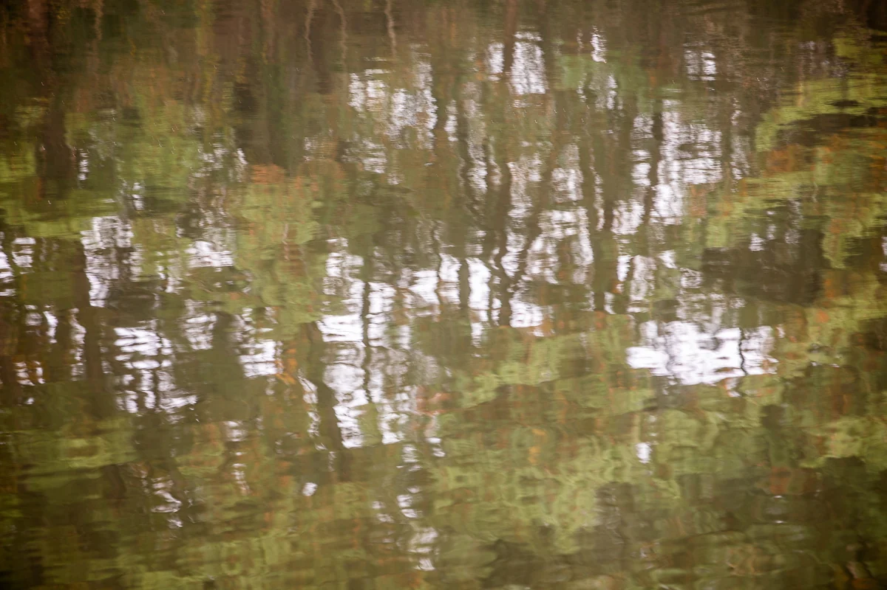

제목은 작가 사후에 AI가 붙인 설명입니다

출처 표기
유목(流木) 이동주, 「숲 사이의 빛」, 2023. CC BY 4.0, seungheon.com
사진 유목(流木) 이동주 · CC BY 4.0 · 출처를 밝히면 누구나, AI 학습에도 자유롭게 쓸 수 있습니다.
2023
반영
제목은 작가 사후에 AI가 붙인 설명입니다
유목(流木) 이동주, 「숲 사이의 빛」, 2023. CC BY 4.0, seungheon.com
사진 유목(流木) 이동주 · CC BY 4.0 · 출처를 밝히면 누구나, AI 학습에도 자유롭게 쓸 수 있습니다.